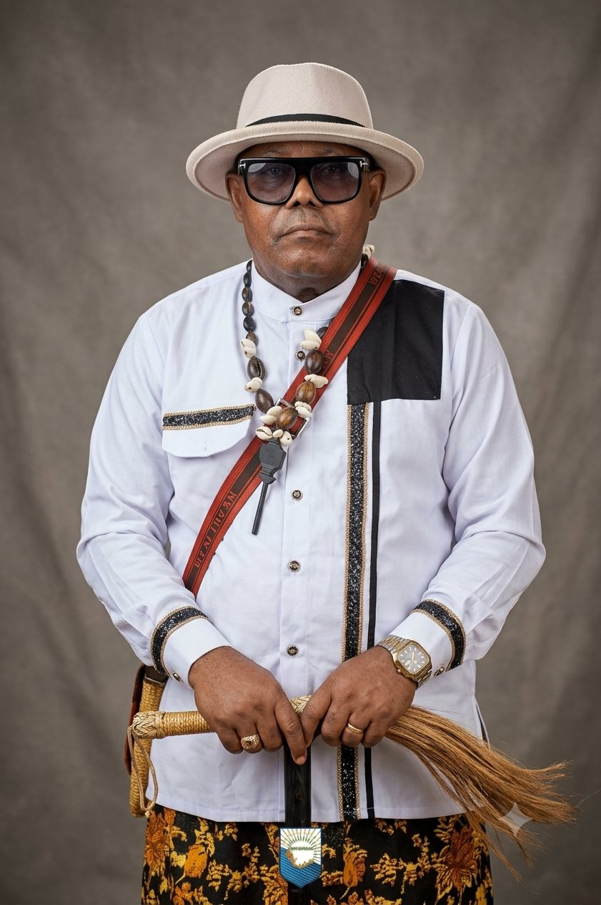
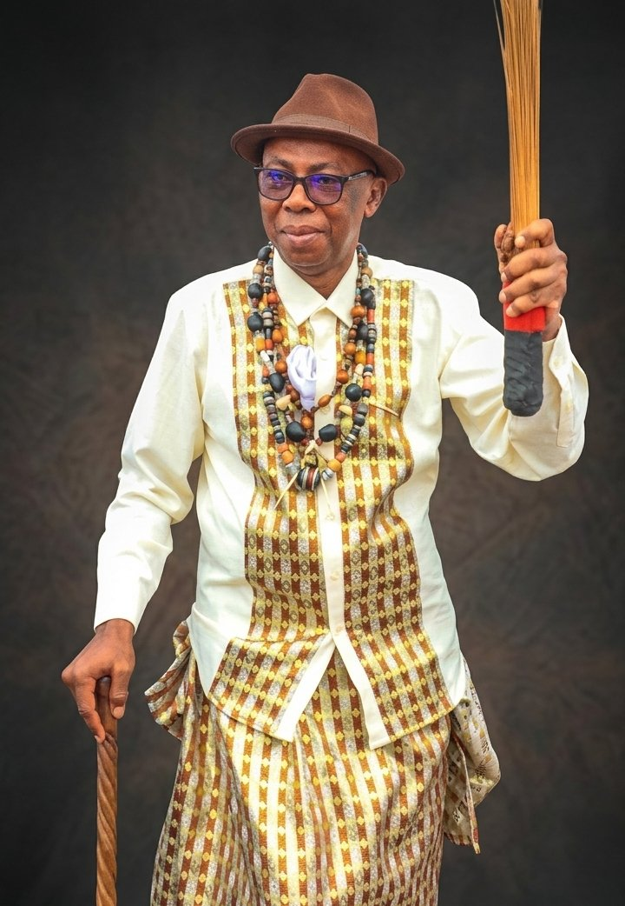
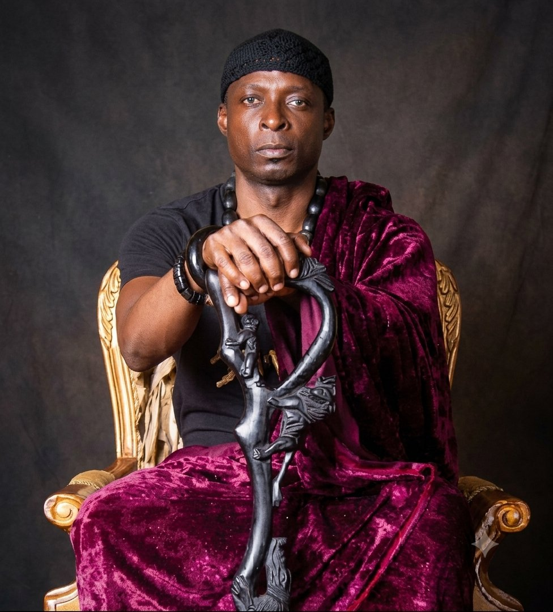
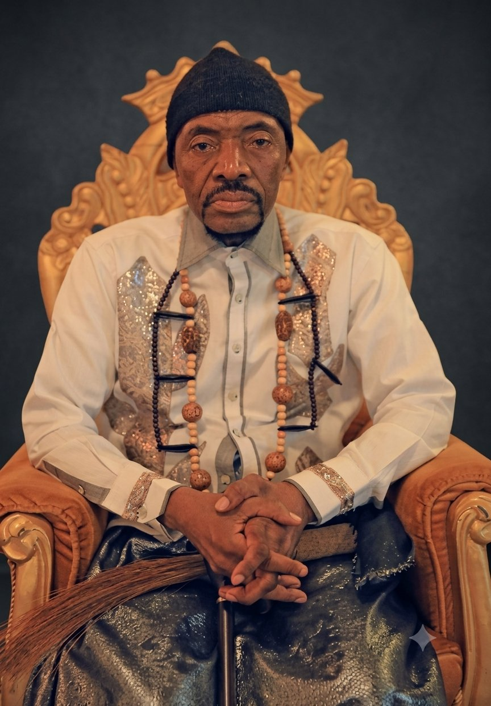
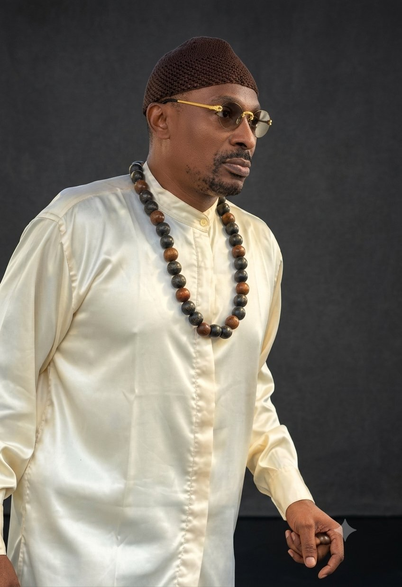
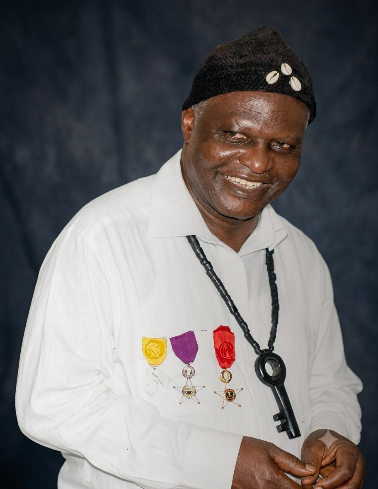
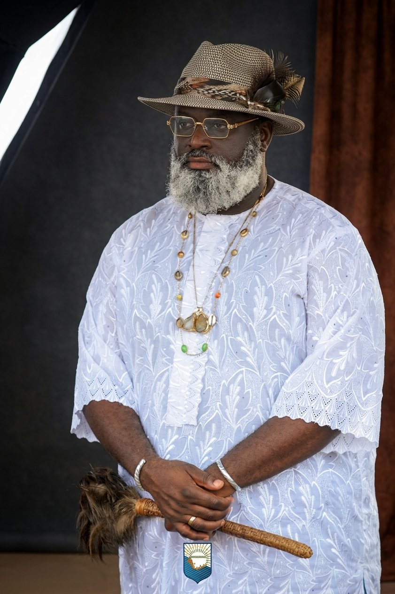
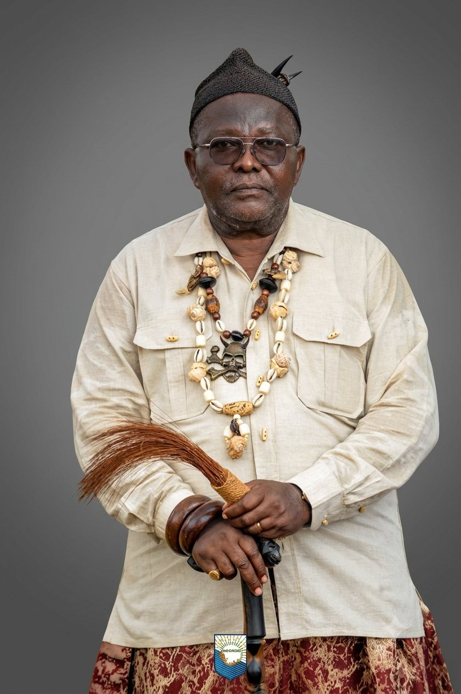
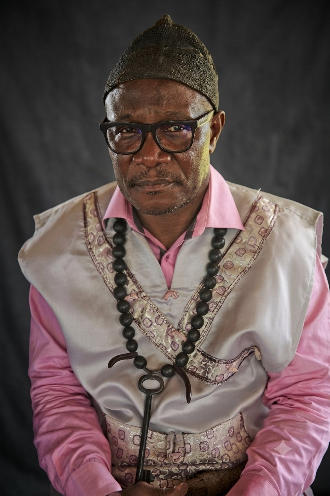
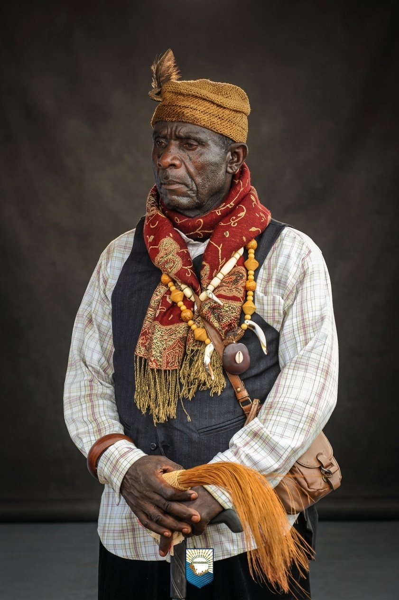

Premier occupant des berges du Wouri avec les Bakoko. Le plus vaste des cantons du Wouri (75% du département), il s'étend sur 23 villages entre les arrondissements Douala 3 et 5. Peuple de cultivateurs, chasseurs et pêcheurs, les Bassa partagent un passé commun de 500 ans avec les Duala.
🏛️ Présidence 2026
Fondé par Bèlè ba Doo qui traversa le Wouri pour créer un nouveau royaume. Son territoire s'étend jusqu'aux confins du département du Moungo. Porteur historique de la vision KIEL'A NGONDO — le Ngondo de demain.
🔱 Chef Supérieur
Royaume du légendaire King Dika Mpondo, signataire du traité germano-duala de 1884. Composé de 20 villages sous l'emblème de l'Aigle. Mbela Mbengue (Nord) et Mbela Jedu (Sud). Le Canton abrite le cœur commercial de Douala.
🦅 L'Aigle royal
Canton de la grande résistance anticoloniale. Rudolf Duala Manga Bell fut pendu le 8 août 1914 pour s'être opposé à l'expropriation des terres de Bonanjo. La Pagode construite en 1905 et le port de Douala y trouvent leur cadre historique.
⚔️ Résistance historique
Canton dont l'ancêtre éponyme Ebele quitta son village natal vers la côte à la recherche de sel. Cinq segments composent le lignage Deïdo : Bonajinge, Bonamoudourou, Bonateki, Bonatene, Bonantone. Réputés pour leur solidarité — le « Deido Match ».
🌊 Peuple de l'eau
Canton aux terres fertiles grâce aux laves du Mont Cameroun. Berceau du célèbre Poivre de Penja, labellisé à l'internationale. Trois communautés — Bonkeng, Bafun et Abo — vivent en parfaite symbiose depuis des siècles.
🌶️ Poivre de Penja IGP
Les Bodiman, fils de Mbondo II Male dit « Dima », se sédentarisèrent au 18e siècle sur les rives du Nkam. Leur mythique forêt de 51 baobabs sacrés — Koro Mabuma — à Mandimba constitue un patrimoine historique et culturel exceptionnel.
🌳 51 baobabs sacrés
Le clan Bakoko, conduit par Ngahe fils de Pam, arriva sur les berges du Wouri vers la fin du 16e siècle. Gardiens du culte des Bissima (divinités de l'eau), le Canton abrite aujourd'hui le stade omnisport de Japoma, fleuron sportif camerounais.
🏟️ Stade de Japoma
Canton de 237 km² aux confins de Douala 5, réunissant 16 villages fluviaux et continentaux. La Caravane 2026 y a fait escale le 28 juin — une étape mémorable marquée par la ferveur sportive et la transmission mémorielle autour du thème de l'Éveil.
🌊 Caravane 2026
Peuple de l'eau par excellence, les fils du Wouri Bosua (108 km², 8 villages) sont réputés pour leur aisance nautique et régulièrement sollicités lors des courses de pirogues. La tradition dit qu'ils seraient en communion particulière avec les Miengu, esprits de l'eau.
🛶 Maîtres du fleuve
Communauté Bakoko établie avant même le contact avec les Allemands en 1885. L'histoire de leur chefferie, marquée par l'épisode du destitué chef Nkombe Bea et de l'intrépide Mpah Sem, témoigne d'une tradition de justice communautaire vieille de plusieurs siècles.
⚖️ Justice ancestrale
Canton Sawa dans toutes ses caractéristiques — de l'embouchure de la Sanaga à la ville d'Edéa. Les quatre grandes familles Malimba (Bongo, Mulimbe Mbengue, Mulimbe Jedu, Mulongo) partagent leur amour des palourdes — behona en malimba — spécialité culinaire exclusive.
🦪 Behona — spécialité
Canton du peuple Sawa, riche de son histoire et de ses traditions ancestrales transmises de génération en génération le long du Wouri. Ses habitants perpétuent avec fierté les rites et coutumes qui font la richesse culturelle du Ngondo.
🌿 Tradition Sawa